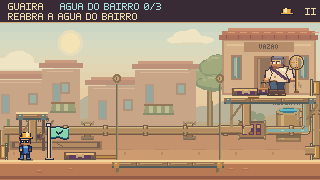
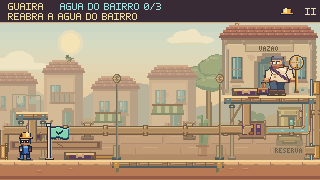
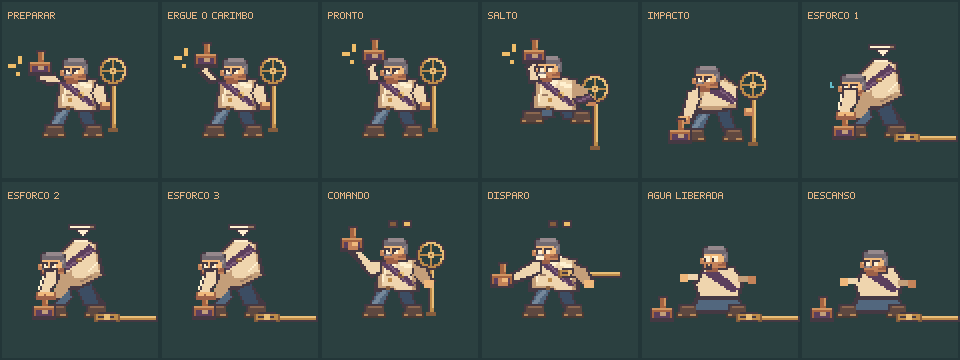
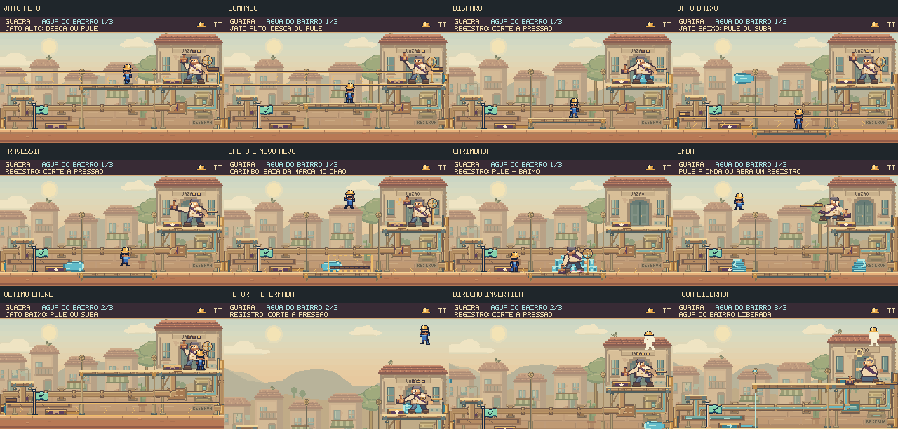

A Casa da Vazão ganha vida.
Continuação: ritmo, variação e resposta visual do Prefeito →
Uma nova passagem de arte no confronto com o Prefeito: arquitetura mais trabalhada, mecanismos com apoios completos, roupas e expressões refinadas e animações de esforço que preservam a leitura do combate.
O acabamento em movimento
Partida gravada com os comandos e a física do jogo, a 60 fps, sem áudio. O vídeo percorre as três etapas do chefe sem interromper as salvas, para mostrar os diferentes ataques e a abertura final da água.
O mesmo instante, antes e depois


Um bairro reconhecível. Telhados em camadas, portas e janelas recuadas, varanda, toldos, varal, plantas e pássaros. O fundo usa cores suaves para deixar Feka e o chefe em primeiro plano.
Uma instalação que se sustenta. Pilares até o piso, bases metálicas, reservatório com visor de água, faixas e rebites, tábuas com juntas e roldanas ligadas ao deslocamento real da plataforma.
O Prefeito também ganhou acabamento

A roupa recebeu costuras, fivela, vincos e uma ponta de faixa que acompanha o salto. Na recuperação, cotovelos e cabeça mostram o esforço para puxar o carimbo; as botas, o carimbo preso e a área do golpe nas costas permanecem fixos. Depois da derrota, o personagem se acomoda e relaxa a expressão.
O varal, os toldos, a vegetação, os pássaros e o reflexo do visor seguem o relógio da cena. A pausa congela esses movimentos; a preferência por movimento reduzido mantém as poses e os avisos necessários para jogar.
Detalhes durante o combate

Ver a partida anterior com os mesmos comandos
Código anterior preservado em baseline-source. As duas gravações usam o mesmo percurso de 1.885 quadros.
Verificação
Foram conferidos os percursos pelo piso e pelo balcão, a espera pela descarga e as interrupções pelos dois registros. A comparação anterior/atual preserva os mesmos quadros dos três golpes e a conclusão sem dano.
Os registros abaixo documentam os testes e a conferência no navegador. As partidas são reproduções ensaiadas; não substituem avaliação de dificuldade e descoberta das estratégias com jogadores novos.
Resultados e arquivos verificados · Percursos completos · Navegador e controles · Reprodução